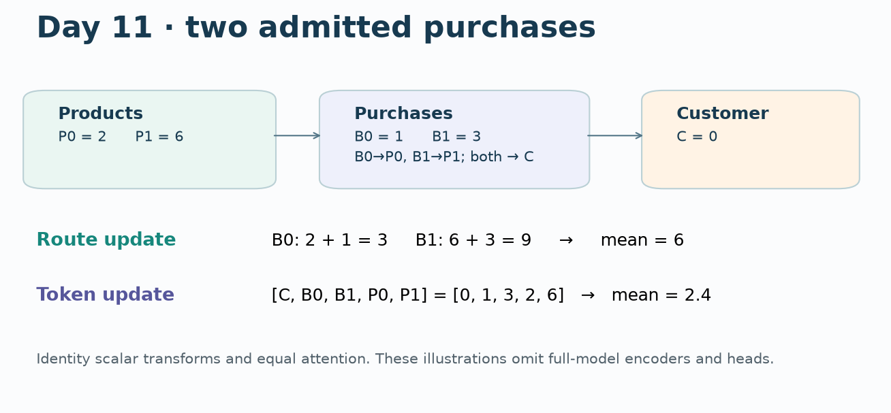
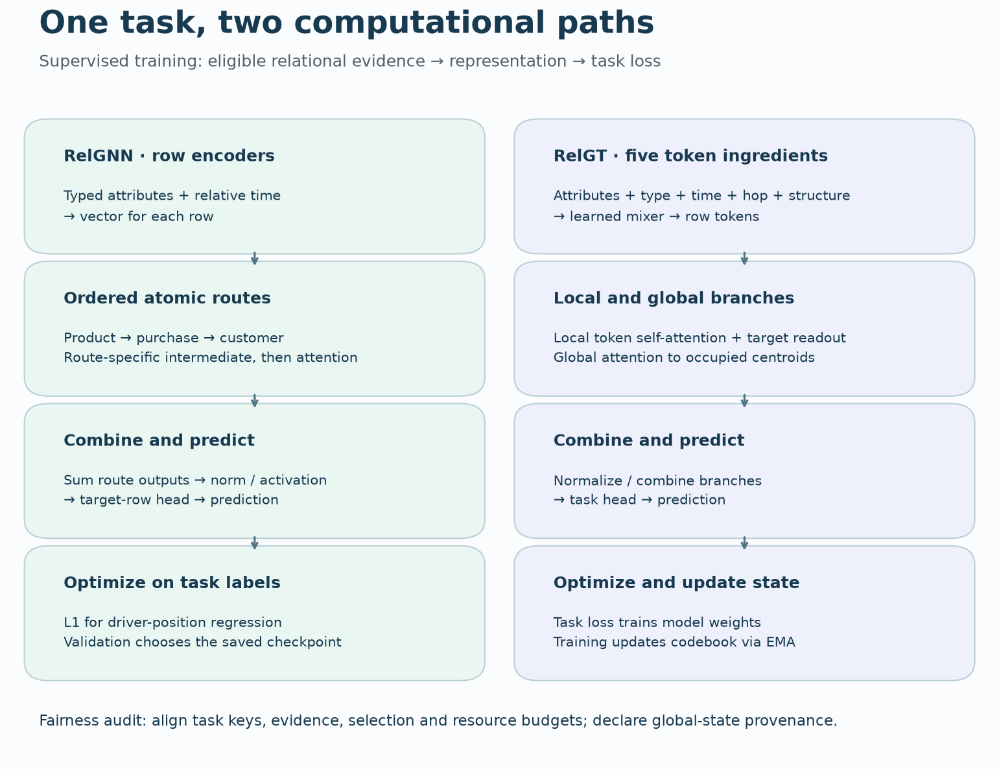

B11 · Same facts, different computation¶
Research bridge · supervised relational baselines · 25-minute lesson + optional lab
Your win: trace one customer prediction through RelGNN and RelGT, then explain what must match before their scores can support an architecture claim.
B10 asked which database cells may communicate. It left a practical question: what should a foundation model beat when trained task-specific models receive a fair chance? B11 returns to supervised baselines. Both models learn weights from labeled task rows; a transformer architecture alone does not make a model a pretrained foundation model. This matters to our mission: a relational-model advantage must survive a defensible baseline.
1 · Retrieve the ingredients¶
Before opening the explanation, answer: Does a two-edge path require two ordinary message-passing layers? Could another operator compose it in one block?
A row is an entity or event. A foreign key identifies a related row. A bridge table connects two kinds of entity: each purchase refers to a customer and a product. A task row asks for a prediction about an entity at a particular cutoff. The label is an outcome after that cutoff and belongs in the loss, not in the input.
For an ordinary GNN, a layer aggregates neighbors' current vectors. Two layers can carry product information through a purchase to a customer. But the intermediate purchase vector may already mix several relations. RelGNN instead makes an ordered relational route the unit of computation. RelGT assembles a context of row tokens and mixes those tokens with attention. Neither choice excuses an unsafe context. RelGNN §3, RelGT §3.
2 · One question, one database¶
Ask: At day 11, what will customer C buy next? These are illustrative scalar features, not real model predictions.
| Row | Foreign keys | Feature | Event day | Available day |
|---|---|---|---|---|
| Customer C | — | 0 | static | before query |
| Product P0 | — | 2 | static | before query |
| Product P1 | — | 6 | static | before query |
| Purchase B0 | C, P0 | 1 | 7 | 7 |
| Purchase B1 | C, P1 | 3 | 8 | 11 |
At day 10, B1 has happened but has not arrived. At day 11, both purchases can enter under our strict course policy. Admit purchases before following their product links. The model must not recover B1 by expanding through an ineligible row. Real benchmark event timestamps usually do not supply an arrival ledger; the fixture makes that distinction explicit.

3 · RelGNN: preserve the ordered route¶
Follow product → purchase → customer. The route first makes a purchase representation for this particular direction, then uses customer-specific attention to combine those representations. Reversing the direction creates a different route. The word atomic describes one composite operator; it does not remove the intermediate purchase arithmetic. RelGNN §3.3–3.4.
For the pinned sum-aggregation variant, the visible calculation is:
# First leg: source products become a route-specific purchase vector.
gathered.index_add_(0, purchase_index, product_vectors[product_index])
route_purchase = W_left(gathered) + W_right(purchase_vectors)
# Second leg: normalize attention separately for each destination customer.
score = dot(Q(customer), K(route_purchase)) / sqrt(head_width)
weight = softmax_over_incoming_purchases(score, customer_index)
message = sum_by_customer(weight * V(route_purchase))
output = final_projection(concatenate_heads(message) + skip(customer))
Choose identity scalar transforms, zero scores, no bias and a zero customer skip. B0 becomes 2 + 1 = 3; B1 becomes 6 + 3 = 9. Equal attention gives (3 + 9)/2 = 6. This is one coordinate of a deliberately simplified operator, not an output calibrated to purchases.
In the full model, table-specific encoders and relative-time encodings create the initial vectors. Route outputs are combined, normalized and activated; a task head maps the target row to a score. L1 loss trains a regression task such as driver-position. The route-specific intermediate is the key difference from reusing one generic, already-mixed purchase state.
4 · RelGT: encode structure into row tokens¶
RelGT takes sampled rows and represents each with five ingredients: attributes, table type, relative time, hop distance and structural position. A learned mixer combines them into a token. Local self-attention mixes tokens; a learned readout combines the target with its neighbors. The full model also attends to global centroids and combines the branches before the task head. RelGT §3 and Figure 2.

RelGNN path
- Typed row attributes and relative time → row vectors.
- Ordered product→purchase→customer route: transform the purchase for this direction, then attend into the customer.
- Combine route outputs → task head → prediction.
- Train on task loss; validation selects checkpoint.
RelGT path
- Attributes, type, time, hop and structural position → mixed row tokens.
- Local token attention and target readout; global attention to centroids.
- Normalize/combine branches → task head → prediction.
- Task loss trains weights; training updates centroid state via EMA.
For an equally simple scalar demonstration, admit tokens [customer=0, B0=1, B1=3, P0=2, P1=6]. Set all query/key scores to zero. One target attention update is their mean: 12/5 = 2.4. RelGNN's route update was 6. The input facts did not change; grouping and normalization did. This toy attention update omits residuals, token encoders, feed-forward layers, readout and the global branch, so it is not a numerical prediction of the full RelGT model.
Global centroids deserve a separate check. The release updates its codebook through exponential moving averages during training, and weights global attention using centroid occupancy. A query can therefore use information stored outside its local rows. In our block experiment, changing a populated centroid changes the output even with fixed local tokens. Equal local context is only one part of equal information. The complete source and the exact reduced scope are in the lab.
5 · Predict, change, explain¶
Before moving the control, predict what happens at day 10. Then change the second product value while its purchase is unavailable. Should either output move?
When can P1 change the answer?
At day 10, only B0 is admitted: the route update is 3; the target attention update over [0,1,2] is 1. At day 11, the default values give 6 and 2.4. A different update does not establish better generalization. Training, labels, regularization and available evidence determine that question.
6 · Build a comparison that can answer the question¶
The question is: Does changing the computation improve held-out predictions under a declared information and training budget? Freeze these contracts before inspecting test results:
| Contract | What to hold fixed or disclose |
|---|---|
| Task | Exact (entity, cutoff) keys, labels, train/validation/test populations |
| Evidence | Same raw features, eligibility policy, sampled rows and induced edges |
| Preprocessing | Same train-fitted transforms; no hidden test-label statistics |
| Global state | Declare training population; freeze centroids at evaluation |
| Optimization | Paired seeds and query order; declared epochs, search and clipping rules |
| Selection | Validation chooses checkpoint/configuration; test is scored afterward |
| Resources | Report parameters, optimizer steps, wall time and memory separately |
Equal width does not imply equal parameters. Equal epochs do not imply equal compute. Equal seeds do not imply equal weights for different architectures. Use paired seed labels to control the data/order schedule and report the remaining differences.
Our unrun matched-study specification separates a local-only RelGT ablation from a full-mechanism comparison with training-only global summaries. It freezes populations and a course training recipe; paid timing pilots and the final shared compute allowance remain unrun. Do not call the proposal an executed fair benchmark.
7 · What the evidence actually says¶
Fresh mechanism experiment: three seeds, nine source block comparisons, absolute output/active-gradient tolerance 1e-9, including empty GNN attention. Row/neighbor permutation and excluded-input intervention checks pass. The full row encoders and training-time centroid updates were not parity-tested in B11.
| Checked block | Cases | Maximum output error | Maximum gradient error |
|---|---|---|---|
| RelGNN composite | 6 | 0.00e+00 | 0.00e+00 |
| RelGT local+global | 3 | 7.22e-16 | 6.15e-15 |
Saved-evidence audit: 11 complete training histories, 11 validation checkpoint selections, and 13,849 validation/test predictions were checked. The table is an inventory of separate protocols, not a leaderboard:
| Archived experiment | Seeds | Validation MAE | Test MAE |
|---|---|---|---|
| L143 · reconstructed RelGNN | 5 | 3.1301 ± 0.0886 | 4.2219 ± 0.1735 |
| L146 · typed-mean GNN | 3 | 3.1977 ± 0.0565 | 4.2936 ± 0.0378 |
| L146 · reduced corrected RelGT | 3 | 3.0483 ± 0.1027 | 4.6175 ± 0.2911 |
± denotes sample standard deviation across seeds, not a confidence interval. The blocks are separate experiments.
The two L146 arms are matched to each other under that course protocol. The L143 arm is not matched to them. In particular, L146's GNN is not RelGNN. Its reduced corrected RelGT also differs from the full source experiment. L143 retained source nonfinite gradients; numerical source agreement does not certify healthy optimization. The test sets were previously inspected, so rescoring is descriptive evidence, not a new confirmatory evaluation.
Full reproduction remains explicit. RelGNN's selected reconstructed five-seed experiment was run in L143 and is replayed here. RelGT's full nine-configuration search remains blocked by the inherited temporal audit and a prior approximately $80 projection against the standing $10 cap. No seeds, epochs or contexts were silently reduced to turn that into a paper claim. The full contract and runnable operators remain available. B11 fresh benchmark training: NOT_RUN. Whole-paper reproduction: NOT_RUN.
8 · Your lab and exit defense¶
Student notebook · Solution notebook · Executed solution · Printable reference
Implement three live functions: admit rows with both clocks, compute masked attention, and select the first validation minimum. The model and audit call these functions; changing a TODO changes a real check. The portable notebook shows the blocks and embeds the source/evidence packet.
Write four sentences before opening the solution: (1) trace product→purchase→customer; (2) explain why local attention gives a different scalar update; (3) name the extra information boundary introduced by global centroids; (4) say why the saved scores do not rank RelGNN against RelGT fairly. Then propose a falsifier: what result would make you reject your preferred architecture explanation?
Retrieval schedule: tomorrow redraw both paths without notes; in seven days repair a comparison with test-based selection; in 30 days defend a complete-key, equal-information protocol. Author checks do not complete this defense: PENDING_WRITTEN_DEFENSE.
Read RelGNN §3 first, then RelGT §3 and Table 6. Revisit L143 for the reconstructed RelGNN evidence and the L146 contract for the controlled course comparison. B12's planned adaptation mechanisms will ask what changes when knowledge comes from pretraining rather than task-specific supervised fitting. Ask the teaching agent about any unclear step, or bring your four-sentence defense for feedback.